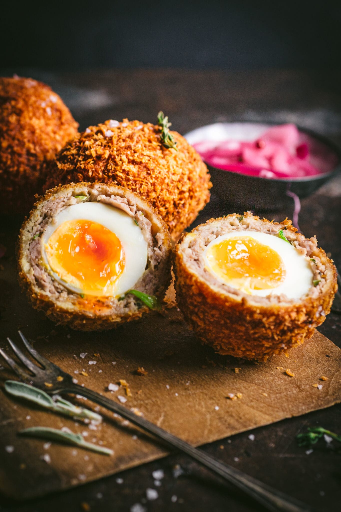

Scotch Egg

They're British pub favorite, perfect for family occasions or picnics. We like to make these on Christmas Eve served on a bed of lettuce with sliced tomatoes and mustard for garnish.
Ingredients
- 1 quart oil for frying
- 4 large eggs
- 2 pounds buld pork sausage
- 1 cup all-purpose flour
- 4 large eggs, beaten
- 4 cups dried bread crumbs, seasoned
Steps
- Gather all ingredints. Preheat the oven to 350 degrees F (175 degress C). Heat oil in a deep-fryer to 375 degrees F (190 degrees C).
-
Place eggs in saucepan and cover with water. Bring to boil. Cover, remote from head, and let
eggs sit in hot water for 10 to 12 minuts. Rermove from hot water, cool, and peel.
-
Flatten sausage and make a patty to surround each egg.
-
Very lightly four the outer sasuage layer then coat with beaten egg.
Rool in bread crumbs to cover evenly.
-
Deep-fry prepeared eggs in hot oil until golden brown while making sure each side is well cooked.
-
Bake in the preheated oven for 10 minutes.
-
Cut in half and serve.
Back to home